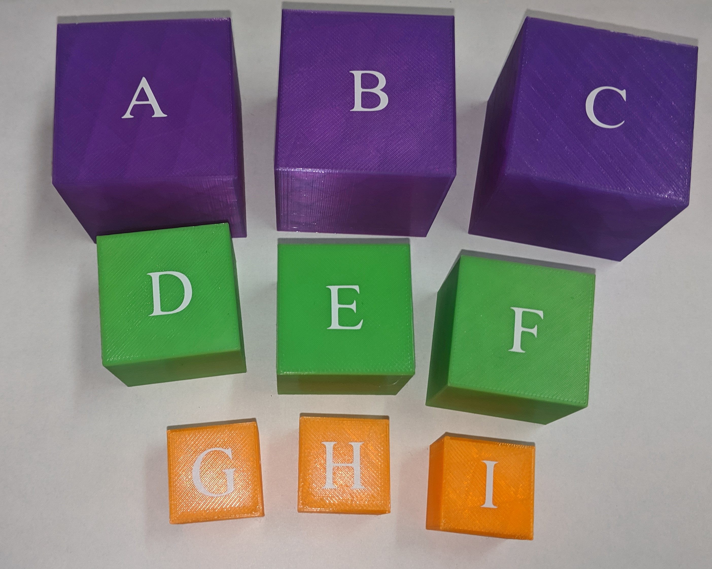

"An object-to-think-with will contribute to the essentially social process of constructing the education of the future." - Seymour Papert
The goal of this project was to design and develop an autonomous robot to function as a basic waehousing system, commonly referred to as a logistics robot. The "warehouse" will consist of a flat surface with predefined and marked routes connecting a "docking area" to three "storage areas" and a "distribution area".
I was excited about this project because it reminded me of Seymour Papert's Turtle implementation. My introduction to computer science concepts was through the use of Turtle Graphics, so it seemed fitting that I was learning to program Arduino with a similar approach. You can read more about Seymour Papert's philosophy on teaching and Turtle implementation in his book, Mindstorms.
Fig 01. - Schematic of warehouse layout.
Fig 02. - Blocks to be transported by rover.
One of our greatest challenges was figuring out path following. We used a reflectance sensor, located on the bottom of the rover, to measure whether the rover was on the path (black area) or off the path (white area). If the rover were to drive "straight" it tends to veer to the right or left so we had to implement a course correction algorithm to make sure it drives as straight as possible. Althought the turns were not perfect, course correcting accounted for the wide turns and eventually got back on track again.
Fig 03. - First attempts at path following.
Fig 04. - Successful path follow around a turn.
Our block retrieval mechanism consisted of a 3D printed linear gear powered by a DC motor pushing against the block until the block pushes against a button that changes its state to acquired. We wrote the algorithm to track how many revolutions the DC motor completes before stopping and converted this to meausre the size of the block. The smaller the block, the more rotations are required.
Fig 05. - Block retrieval demo.
Looking back, I would have improved the mechanism used to grab the block. One of the main drawbacks of the gear was that it was slow. The smallest block took about 30-45 seconds to be grabbed. Some of my peers had some great mechanisms like gates, claws, and crates. Had time permitted, I would have loved to put LEDs and a speaker on the rover. I wanted the rover to play a song and light up based on each color block on its way to the drop off point. Alas, my dream of hearing Prince's Purple Rain in a graduate level robotics class will likely die with me. If you'd like to see a full video journey of this project's development, it's available here.
Project completed Dec. 2019